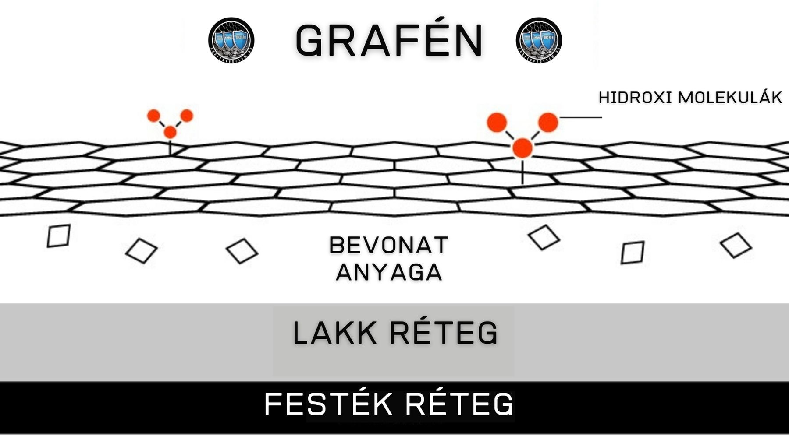
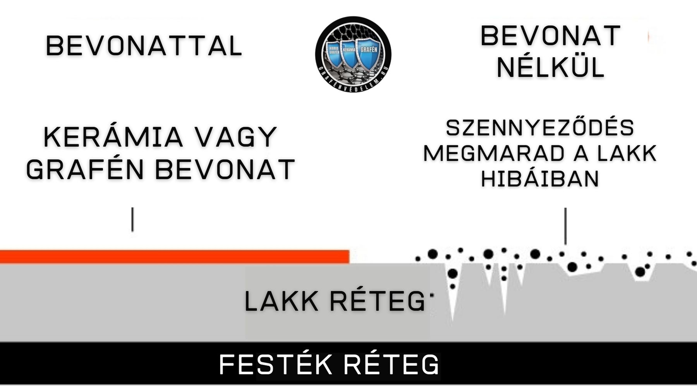
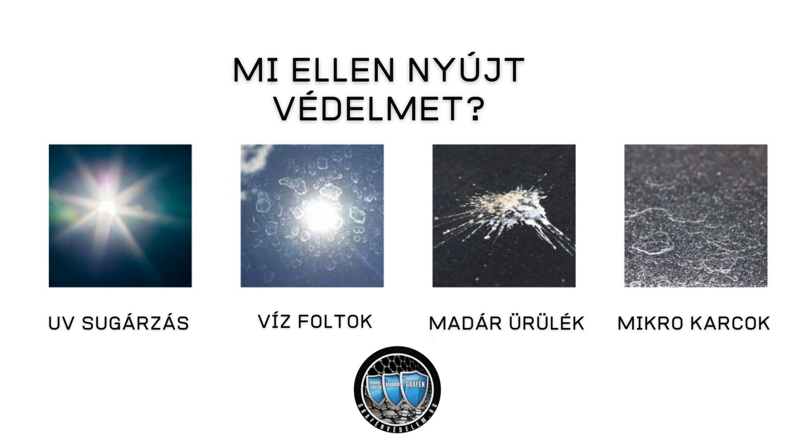

Grafén Bevonataink
Grafén Mátrix bevonatunk lenyűgöző csillogást eredményez, egy olyan felületet, amelyet észrevehetően könnyebb tisztítani, és minimális karbantartást igényel. Ez egy tartós bevonatkezelés, ami a telepítés után folyamatos, kézzelfogható eredményeket szolgáltat. Ezt az eredményt tovább erősíti a folyamatos-, következetes és szakszerű tisztítás és karbantartás.

Mire szolgál az általunk telepített Grafén bevonat?
A Grafén Bevonat segítségével hihetetlenül nagy teljesítményű bevonatot várhatunk el, amely a fényesség felső 99 százalékával, rendkívül nagy tartóssággal és hihetetlen hidrofób tulajdonsággal, valamint nagyon egyszerű karbantartással és tisztítással rendelkezik.
Mivel a grafén atomok olyan erősen kötődnek egymáshoz, hogy ezek az attribútumok desztillálódnak, és olyan bevonatot hoznak létre, amely megnöveli a kopásállóságot, elősegíti a jobb tapadást több különböző felülethez (festék, üveg, fém, műanyag stb.) valamint növekszik az élettartam. Ez valóban egy univerzális bevonat, amely hihetetlen teljesítménnyel rendelkezik.

A karbantartás nagyon egyszerű a bevonat fokozott vegyszerállóságának köszönhetően, és nagyobb ellenállást jelent a vízfoltokkal, a madárürülékkel és egyéb környezeti hatásokkal (só, vegyszerek, stb) szemben.
A tisztítás könnyű és egyszerű a rendkívül magas vízzel való érintkezési szög miatt, amely öntisztító hatást eredményez, és könnyebben eltávolítja a szennyeződéseket. A szennyeződések egyébiránt nehezebben tapadnak a felülethez, mivel a grafén természetes képessége, hogy egységes bevonatot hoz létre.

A nagy nyomású vízzel való érintkezési szög nagyobb, gyöngyszerű vízcseppek kisebb méretűek, és elősegítik a felületről történő legördülést. Ezek a legördülő vízcseppek pedig könyebbe lehúzzák a koszt, a szennyeződést. A mosás egyszerűbb, kevesebb időt és erőfeszítést igényel.

Mire NEM szolgál a Grafén bevonat:
Nem szabad elvárni, hogy bármely grafénbevonat bármilyen felületen teljesen karcmentes, maratás-, vízfolt- és szennyeződésbiztos bevonatot biztosítson. Ezek a bevonatok a technológia lenyűgöző teljesítményei, de nem bírják az elhanyagolást, a nem rendeltetésszerű használatot. (erről a kocsi átvételekor részletes tájokoztatót biztosítunk) Enyhébb fizikai behatások ellen biztosítja a védelmet, de a durva karcok ellen (más, hamis reklámokkal ellentétben) nem fog védelmet nyújtani.
Összefoglalva:

A szolgáltatás az alábbiakat tartalmazza
Az autó több lépcsős tisztítása.
Teljes több lépcsős autókozmetika gyurmázás, mélytisztítás és zsírtalanítás.
Egy vagy több lépcsős polírozás (szükség esetén fényezés korrekció).
Bevonat felvitele fényezett elemekre, felnikre, lámpákra, valamint az összes optikai műanyag felületre (külön igény esetén további felületekre is).
Bevonat eloszlatása és a felesleg visszatörlése a felületről.
A bevonat pihentetése.
A szolgáltatás továbbiakban tartalmaz még tájékoztató átadását, illetve két alkalommal történő Utóápolást amelyet fél évente célszerű megtenni.
Grafén Mátrix szolgáltatás árai
az árak tájékoztató jellegűek, nem számítanak hivatalos árajánlatnak, a kategóriaválasztás jogát az autók sokszínűségére való tekintettel fenntartjuk. Amennyiben a kategória és az állapot (+10-20% eltérést jelenthet) helyesen kerül kiválasztásra, úgy a várható bruttó ár egy elvi maximum árat jelöl. Ezért kérje INGYENES állapotfelmérésünk és részletes árajánlatunk!